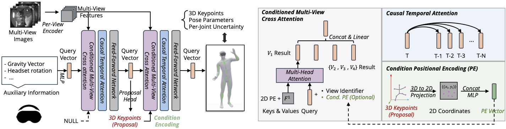
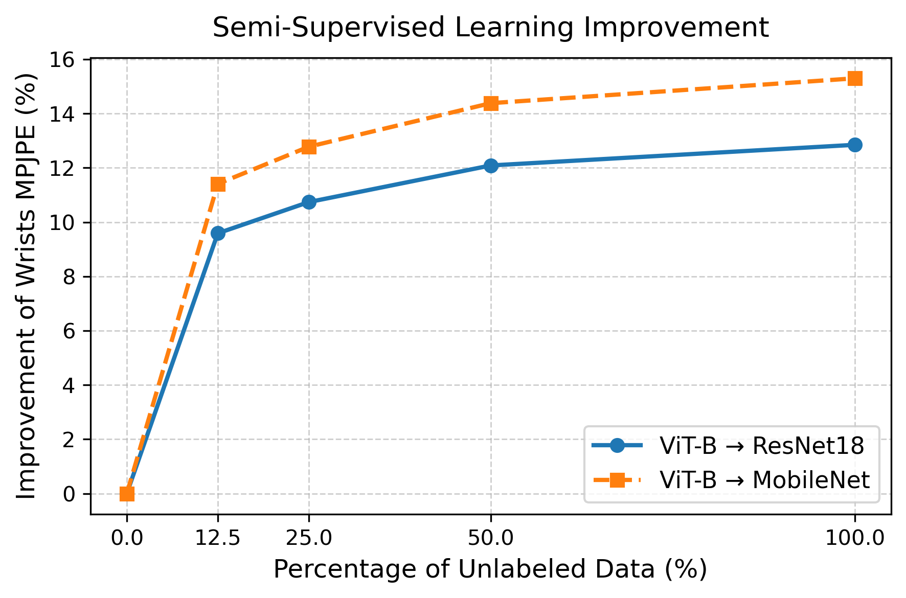

Qualitative results on the EgoBody3M dataset. Predictions are colored in green and ground-truth poses in orange. Multi-view headset camera inputs are shown alongside the predicted 3D motion.
Egocentric human motion estimation is essential for AR/VR experiences, yet remains challenging due to limited body coverage from the egocentric viewpoint, frequent occlusions, and scarce labeled data. We present EgoPoseFormer v2 (EPFv2), a method that addresses these challenges through two key contributions:
(1) A transformer-based model for temporally consistent and spatially grounded body pose estimation. Our model is fully differentiable, introduces identity-conditioned queries, multi-view spatial refinement, causal temporal attention, and supports both keypoints and parametric body representations under a constant compute budget.
(2) An auto-labeling system that scales learning to tens of millions of unlabeled frames via uncertainty-aware semi-supervised training. The system follows a teacher–student schema to generate pseudo-labels and guide training with uncertainty distillation, enabling the model to generalize to different environments.
On the EgoBody3M benchmark, with a 0.8 ms latency on GPU, our model outperforms two state-of-the-art methods by 12.2% and 19.4% in accuracy, and reduces temporal jitter by 22.2% and 51.7%. Furthermore, our auto-labeling system further improves the wrist MPJPE by 13.1%.

Architecture overview. We stack two transformer decoders for coarse-to-fine pose estimation. A single holistic query, initialized from auxiliary metadata (headset pose, user identity, etc), attends to multi-view features and historic information to estimate 3D keypoints, pose parameters, and per-joint uncertainty in an end-to-end differentiable architecture. Causal temporal attention enables each frame to attend to its temporal history. Conditioned multi-view cross-attention incorporates view identity and 2D keypoint projections to guide spatial feature aggregation across views.
To scale training beyond scarce labeled data, we propose a semi-supervised auto-labeling pipeline. A teacher model trained on a small labeled set generates pseudo-labels for up to 70 million unlabeled egocentric frames (EGO-ITW-70M). The student is then jointly trained on labeled and pseudo-labeled samples using an uncertainty-guided distillation loss that down-weights unreliable labels — enabling the model to generalize across diverse devices and environments.

ALS effectiveness in in-domain scaling. As more unlabeled data is incorporated, both student models improve. Notably, MobileNetV4-S benefits more proportionally from ALS despite lower capacity, highlighting the pipeline's suitability for lightweight on-device deployment.
If you find our work useful, please consider citing:
@article{li2026egoposeformer,
title={EgoPoseFormer v2: Accurate Egocentric Human Motion Estimation for AR/VR},
author={Li, Zhenyu and Dwivedi, Sai Kumar and Maric, Filip and Chacon, Carlos and Bertsch, Nadine and Arcadu, Filippo and Hodan, Tomas and Ramamonjisoa, Michael and Wonka, Peter and Zhao, Amy and others},
journal={arXiv preprint arXiv:2603.04090},
year={2026}
}